爱情数据
过去的 1469 天里，我们共发送了 226122 条消息，平均每天发送 154 条消息，也就是每 9 分钟就会想起对方一次。总字数 1620881 字，平均消息长度为 7.2 字。其中小黄发送了 103386 条消息（占比45.7%），小张发送了 122736 条消息（占比54.3%）。
小时消息分布
从0点到23点的24个小时里，每个小时都留下了我们聊天的印迹。其中深夜22-24点是我们一天中聊天最多的时间段，这是属于我们分享一天收获与疲惫的「悄悄话时间」，午间12-13点，则是我们的「午休陪伴时间」，无论多忙，工作间隙也要留出时间分享生活的点滴。
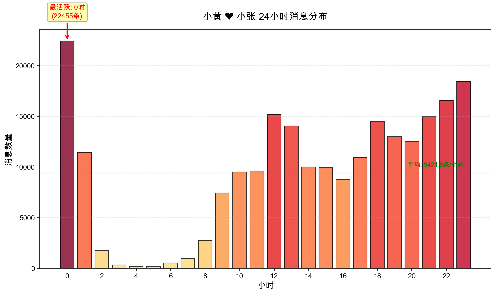每周消息分布
我们一周之中周几聊天最活跃呢？答案是周六和周日，工作日的忙碌让周末成为我们专属的「情感充电时间」，平常上班各忙各的，只能抽空断断续续地聊，但是到了周末，我们有更多的时间来好好聊天，让细水长留的分享成为周末最暖心的陪伴。
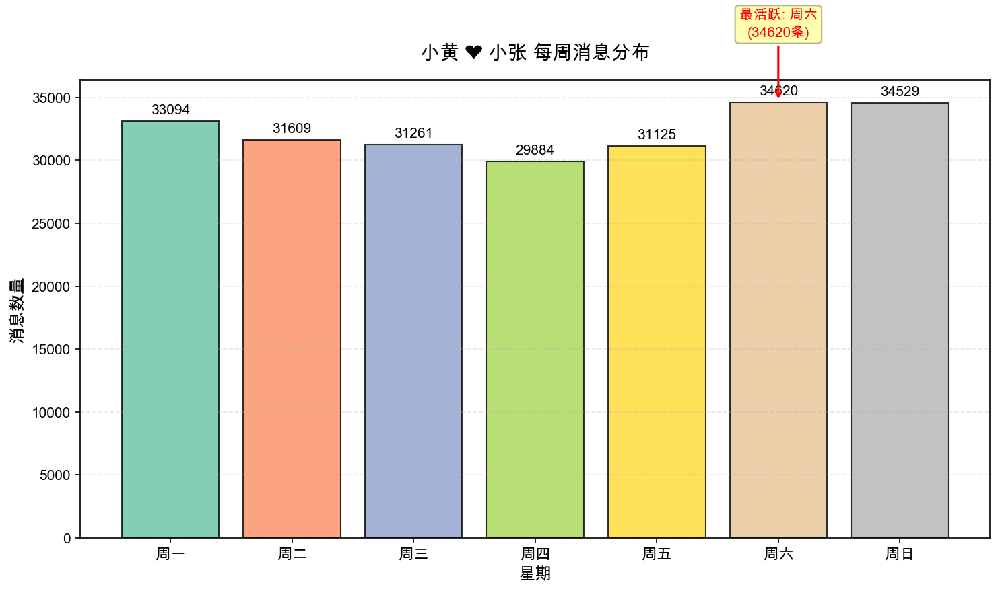每月消息趋势
这条紫色的曲线，是我们爱情的「心跳记录」，2022年的上半年，我们月均发送10000条以上的消息，3月是我们在一起的第一个月，消息发送高达14761条，这段高峰见证着我们从相知到相恋的热烈，每天有说不完的话，分享不完的生活，即使后来曲线渐趋平缓，但依然跳动着我们相爱的脉搏，从热烈到绵长，始终幸福。
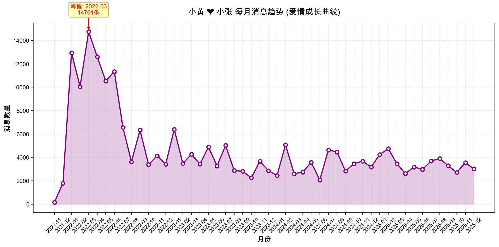每日消息趋势
这些上下跃动的曲线，是我们每天的「碎碎念进度条」。2022年的4月23日，是我们历史上聊天记录最多的一天，共计发了1428条消息，相当于平均每分钟就会发一条消息，那么这天我们都在聊些什么呢？这一天，我们凌晨1点半才结束聊天，然后从早上9点15分一直聊到晚上23点56分，基本没间断，从我的疫情宅校日常到《人民的名义》剧情，然后是一起看LOL春季赛决赛，赛情讨论贡献了我们这一天的大部分消息。
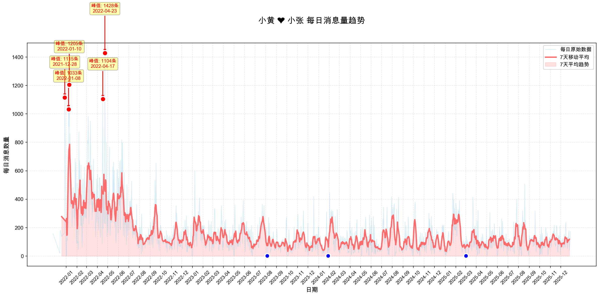甜蜜消息时间线
这满屏密密麻麻的粉红圆点，是我们每天藏在对话里的「甜蜜标记」，在1469天里，我们有1383天都发了甜蜜消息，占比94%，其中2023年7月22日是我们的「最甜日」，这一天我们共发送了155条甜蜜消息。猜猜我们的第一次甜蜜消息是在什么时候？是在2021年12月28日1点36分互道的晚安。
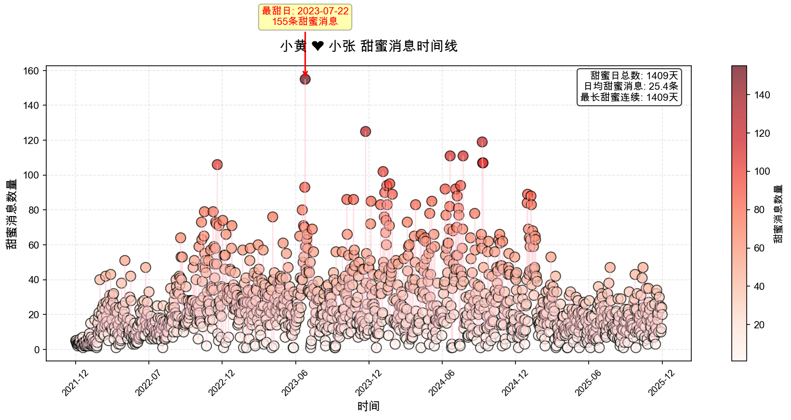回复时间分布
和小张的聊天总是能得到最快速的回应，在我们的聊天里，59.4%的消息都能在1分钟内得到彼此的回应，平均135.2秒的等待背后，是“看见消息就想立刻回你”的小确幸，是“你在我这里，永远是P0”的最高优先级。
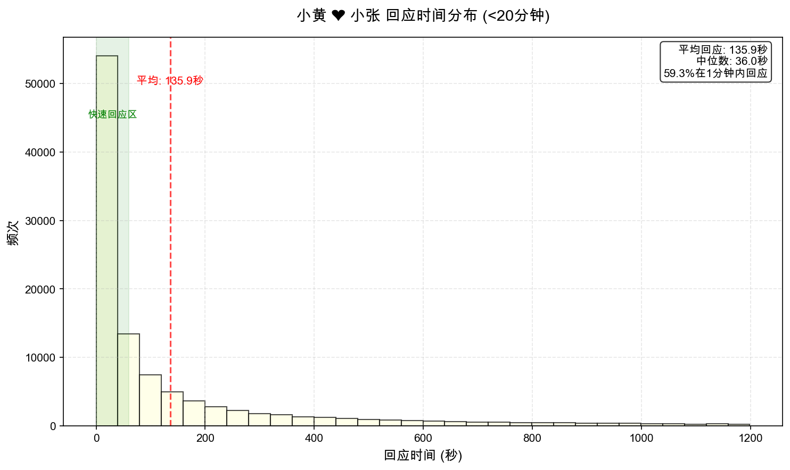消息长度分布

消息类型分布
除了文字内容的消息，链接、图片、表情、语音、视频也是我们聊天的重要组成部份，从消息类型雷达图来看，小黄更喜欢分享链接，小张更喜欢分享图片，而在表情的分享上，我们不相上下，这些不同形式的消息，共同编织成了我们最珍贵的回忆。
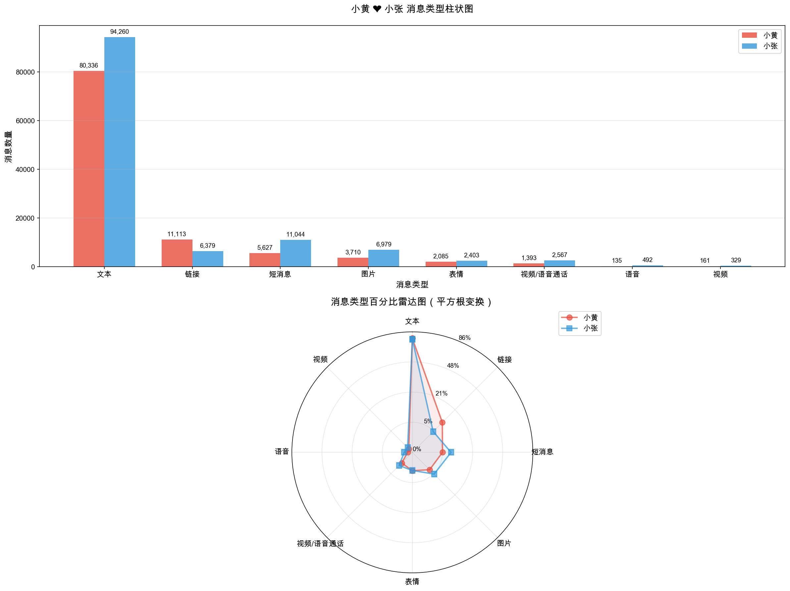过去的1469天里，我们有视频通话的天数是890天，占比60.5%，一共打了3891次视频/语音，其中小黄发起了1369次，小张发起了2522次，最长连续通话天数是37天。异地的时间里，视频通话就像一根无形的线，把分隔两地的我们紧紧连在一起，让彼此的生活从未真正缺席。
小时视频分布
和聊天一样，我们总喜欢在晚上打视频，最常视频通话的时间段是晚上18点到23点，总计1419次（占比36.5%），其次是深夜23点至6点，总计1009次（占比25.9%），见不了面的日子里，这些屏幕里的陪伴就成了我们最珍贵的温暖。

每周视频分布
不同于聊天消息的均匀分布，视频通话的分布则是在周六与周日出现了显著的峰值，几乎是工作日视频次数的两倍，总计1860次，周末以28.6%的时间占据了我们47.8%的视频通话，数字反差里，是周末时光里双倍浓甜的「专属视频陪伴」。
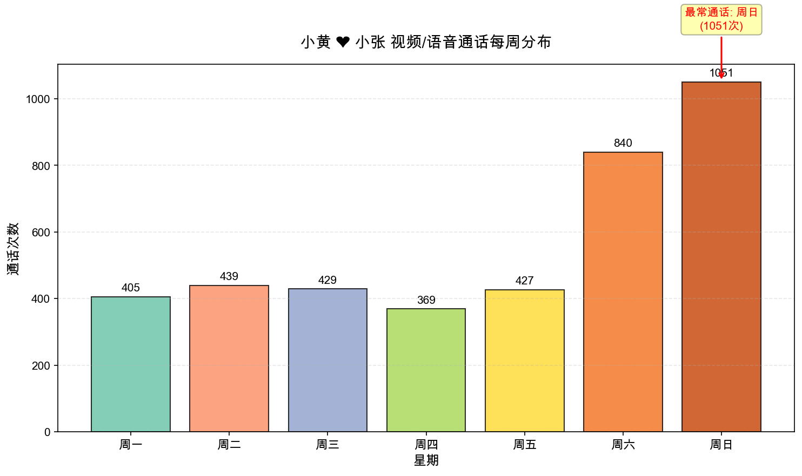每月视频趋势
我们最早开始视频通话的时间是在2022年2月（5次），视频通话次数最多的月份是在2023年9月（230次），从最初的零星连线到后来每天都要打视频，这些数字的变化记录着我们走向亲密的每一步。让异地的日子也充满了温暖的陪伴。
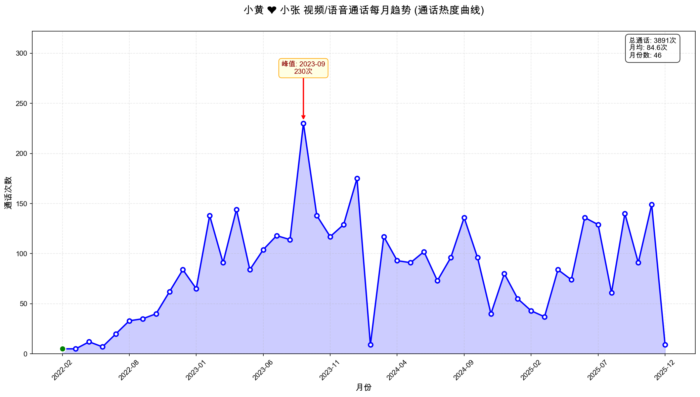每日视频趋势
3891次视频通话绘就了这条「异地陪伴曲线」，屏幕两端的晨昏与四季，都被揉进了这或高或低的连线里，起伏间，全是隔着距离的相守。那些密集的点，是我们共同走过的时光，而其中连成的线，是我们从未间断的思念。
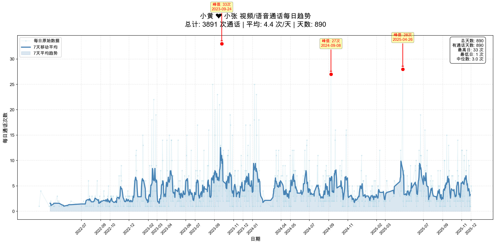消息热力图
从2022到2025，四年的时光在这张热力图上变成了密密麻麻的绿色方块。在过去的四年里，我们没有聊天消息的日子只有4天，分别是2023年的4月29、30日，2024年的1月26日，6月8日，这几天里，我们都相互陪伴在彼此身边，陪伴是最长情的告白，我要感谢你四年如一日的全勤陪伴，让每一天都铺着温柔的诗行，让每一刻都浸着相爱的模样。
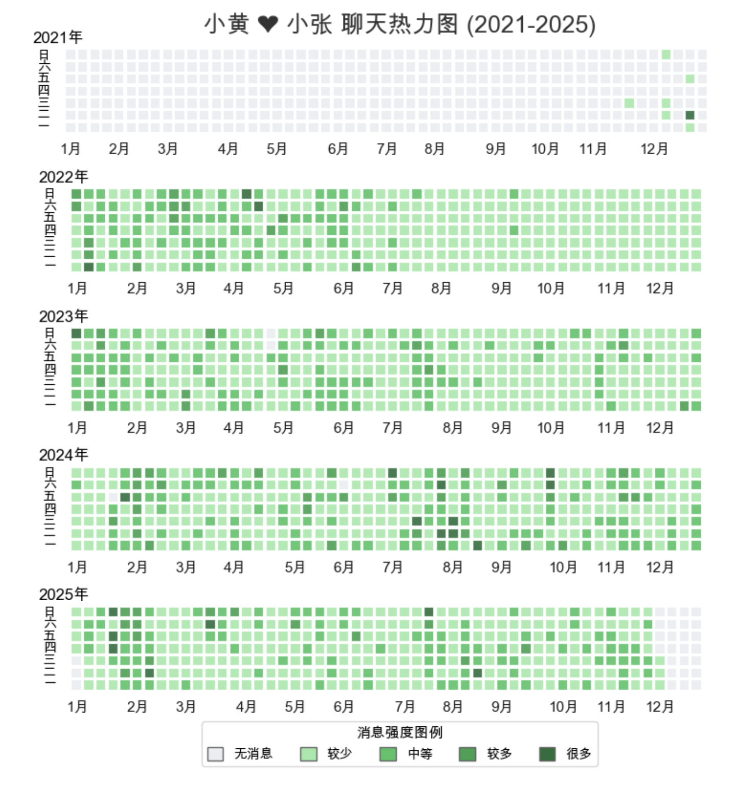爱情关键词词云
这是我用我们的聊天关键词为你画的一颗爱心，“猪猪”“宝贝” 是我们挂在嘴边的昵称，“回家”“吃饭” 是日常的温柔，所有这些细碎的词语都被时光编织成了心的形状，每一个字都藏着我们一起走过的晨昏，每一个词都泛着相爱的温度，就像我们的爱情，平凡却又满是星光。